The first coffee table is to have a regular Dodecahedron outer shape and an Icosahedron within. Here are some illustrations. The regular Dodecahedorn is shown with blue struts and golden/orange spherical vertices/hubs. The Icosahedron is shown with red struts and small golden/orange spherical vertices/hubs. Very thin green struts join the inner Icosahedron to the outer Dodecahedron.
A regular Dodecahedron has 20 vertices, 12 pentagon faces and 30 edges/struts. There are 3 struts converging at each hub.
An Icosahedron has 12 vertices, 20 triangular faces and 30 edges/struts. There are 5 struts converging at each hub.
If you extend the edges/struts of the Icosahedron beyond the Icosahedron's vertices, you find that they merge in 20 groups of 3. These new merged/intersection points define the vertices of a regular Icosahedron.
NOTE: All length dimensions are in inches. All angle dimensions are in degrees.
Height (without glass): 16.5 inches = 15 inches Dodecahedron + 2x0.75 inches radius of hubs.
Glass thickness: 0.25 inches.
Total Height (including glass top): 16.75 inches.
The Dodecahedron's hubs are to be made out of 1.5 inch diameter spherical wooden spheres.
The Icosahedron's hubs are to be made out of 1.0 inch diameter spherical wooden spheres.
Dodecahedron Struts (need 30): 0.5 inches diameter.
Vertex to Vertex length (i.e., center of hub to center of hub): 6.735 inches.
0.183 inches are removed from each end of the struts because without removing this amount, two struts will intersect each other within the hub.
Physical strut length: 6.735 – 2 x 0.183 inches = 6.369 inches.
3 feet x 12 inches = 36 inch dowel length.
36 inches / 6.369 inches = 5.6524 implies we can make 5 struts per 3 foot length.
Total 3 foot length dowels (0.5 inches diameter) = 6 (6 x 5 = 30).
Icosahedron Vertex Spheres (need 12): 1.0 inch diameter.
Icosahedron Struts (need 30): 0.125 inches diameter.
Vertex to Vertex length: 4.163 inches.
36 inches / 4.163 = 8.65 => 8 struts per 3 foot length.
Total 3 foot length dowels (0.25 inches diameter) = 4 (4 x 8 = 32).
InterPolyhedron Struts (need 60): 0.125 inches diameter.
Vertex to Vertex length: 6.735 inches.
(NOTE: These struts are to be cut “in place” and not pre-cut. This is because accumulation of error and other factors introduce unpredictable inaccuracies. These struts are surface glued to the polyhedra hubs, i.e. not recessed into the hubs.)We need to construct a jig to mark the locations on the sphere hubs where the 3 struts of the Dodecahedron are to be inserted.
The Dodecahedron's hubs are designed as follows.
| 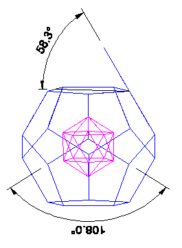 |
| Dodecahedron hub angles. |
| 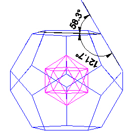 |
| Dodecahedron hub angles. |
| 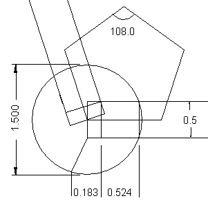 |
| Dodecahedron hub design strut insertion lengths. |
Make a jig to hold the 1.5 inch diameter spheres. The jig can be so constructed as to allow the marking of 3 points on the equator as well as the "north pole" of the sphere.
The 3 points on the equator are 108/2 = 54 degrees apart from each other. Number these points 1, 2, 3.
| 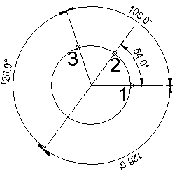 |
| Dodecahedron hub design. |
Make sure the north pole point is marked.
Now imagine an arc drawn from the equator at point 2, which is half way between points 1 and 3 on the equator, to the north pole. We can continue this arc through the north pole and down to the equator on the opposite side of the sphere hub from point 2.
We now need a jig to be able to mark a point (labeled 4) on this arc. The point is 121.7° from point 2 through and beyond the north pole. This point 4 is 31.7° beyond the north pole point.
| 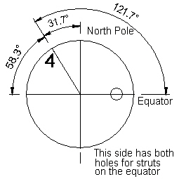 |
| Dodecahedron hub design. |
With these points marked on the 1.5 inch diameter sphere hub, we can drill a 0.5 inch diameter hole at points 1, 3, and 4 only. The hole depth need only be to the center of the sphere.
When a dowel is inserted into the hub, it must only be inserted to a depth of 0.524 inches. This can be marked on the dowel before insertion.
A jig is made to mark 5 points on the sphere hubs indicating where holes are to be drilled for the 5 struts to be inserted into the hub.
First, we need to understand the hub.
| 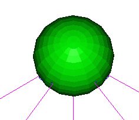 |
|
Icosahedron hub sphere accommodates 5 struts. |
Looking down on a hub.
| 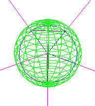 |
|
Icosahedron hub sphere accommodates 5 struts. |
Here is a side view.
| 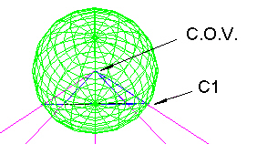 |
|
Icosahedron hub sphere accommodates 5 struts. |
Note that "C1" defines a (blue) circle on the surface of the hub sphere. The 5 struts intersect this circle. ("C.O.V." = Center Of Volume point.)
The blue circle has the following dimension and angles with respect to the vertex at the hub sphere center.
| 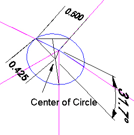 |
|
Icosahedron hub sphere accommodates 5 struts. |
Its the angular dimension we are after. We will make a jig based on this angle which will work for any size hub.
| 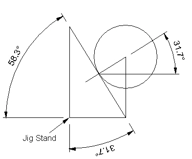 |
| Icosahedron hub jig design. |
In the above figure, the circle is the sphere hub. Within the circle is a triangle with a small 31.7° angle, as we found from the above figures.
So, if we make 5 large triangle stands, with the appropiate angle, we will be able to arrange them so all we have to do is to put a sphere between the 5 stands. Where the sphere touches the 5 stand triangles will be the points where 5 holes need to be drilled for the 5 struts entering the hub. This works independent of the sphere hub radius.
The arrangement of the 5 stand triangles is shown in the next figure.
| 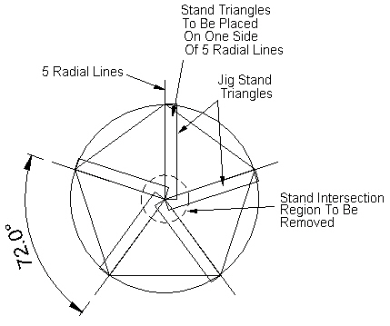 |
| Icosahedron hub jig design. |
Usage Note: My work is copyrighted. You may use my work but you may not include my work, or parts of it, in any for-profit project without my consent.